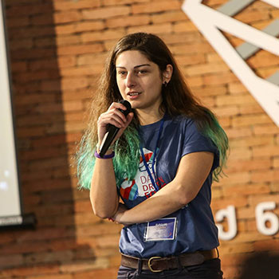

SPEAKERS
Eric Nicholas Barrett
Data Consultant
Eric Barrett has worked in the field of data, technology, and transparency for almost ten years. From 2008-2010 he worked at Transparency International Georgia as Digital Organizer. In 2010, he joined the JumpStart Georgia team, then known as Open Maps Caucasus. Eric became Executive Director in 2012 and took JumpStart into a new direction - combining data and visualizations with journalism to tell stories in innovative ways in Georgia all the while advocating for open data principles and practices among NGOs and government. Eric left JumpStart at the end of 2016 and now teaches and works with organizations in the Caucasus to tell stories when data and design are crucial components. He lives in Tbilisi, Georgia with his wife, daughter and a newborn son.

Jakub Gornicki
Journalist And Social Entrepreneur Reporter, Outriders
Jakub Gornicki is a Reporter for and Co-Founder of Outriders. He combines new technologies and storytelling with journalism, blogging, government accountability, and transparency. Formerly, Gornicki was a board member and COO of the ePaństwo Foundation, which he developed into an internationally prominent open data and transparency NGO. He also established the organization Code for Poland and combined it with Code for All, in collaboration with Code for America. Gornicki also contributes to the Open Cities Program, which helps European cities adopt open data policies, as well as the Personal Democracy Forum in CEE and TransparenCEE. He was a 2014 New Europe Challenger (first round) and was later named one of the 28 most innovative Poles by newspaper Puls Biznesu. Gornicki also formerly worked for Sourcefabric, where he supported the media sectors in Turkey, Yemen, Georgia, and Ghana by providing training and open source software implementation.

Mariam Kobuladze
Freelance Dataviz Designer, Georgia
Mariam Kobuladze has more than 5 years experience in information graphic and UI/UX design. Currently she is working on various projects as a freelance designer. Previously she worked at JumpStart Georgia for 4 years designing award-winning infographics, interactive visualizations and data portals. Mariam also teaches at Caucasus School of Technology in Tbilisi, Georgia.
Nadiia Babynska
Open Data Policy Expert, Open Data Lab Ukraine
Nadiia Babynska (Virna) is a media-expert, investigative journalist, open data and access to public information activist, trainer from Ukraine. She is a consultant of the open data project in TAPAS and volunteer, also a coordinator of the Technovation Challenge in Ukraine. Currently she also coordinates Youth Innovation Challenge on democracy and human rights in Ukraine. Nadiia was a project manager of the Open Data Portal of Ukrainian Parliament project, an expert of Apps4Cities project (open city data) in Ukraine.
Shelley Inglis
Governance And Peacebuilding Team Leader, Undp Istanbul Hub
Shelley Inglis is the United Nations Development Programme Regional Cluster Leader of Governance and Peacebuilding for Europe and CIS, and previously Policy Advisor and Team Leader in the Democratic Governance Group. Prior to UNDP, she was in the Rule of Law Unit in the Office of the United Nations Deputy Secretary-General working on system-wide policy coordination and coherence in the field of rule of law. She has worked previously on security governance, human rights and rule of law for the Department of Peacekeeping Operations, the Office of the High Commissioner for Human Rights in Geneva, and the United Nations Development Fund for Women (UNIFEM). She is a graduate of Columbia School of Law (JD) and Cornell University (BA).